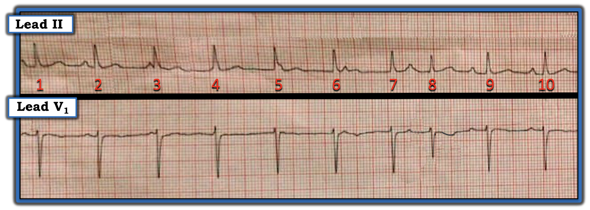
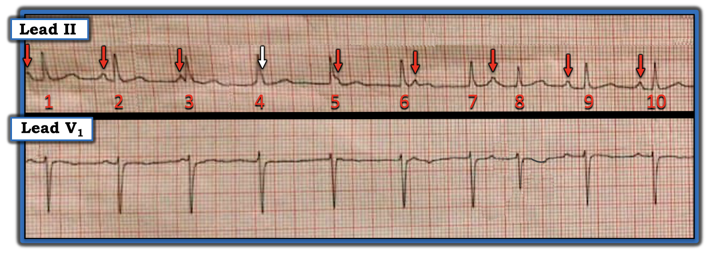
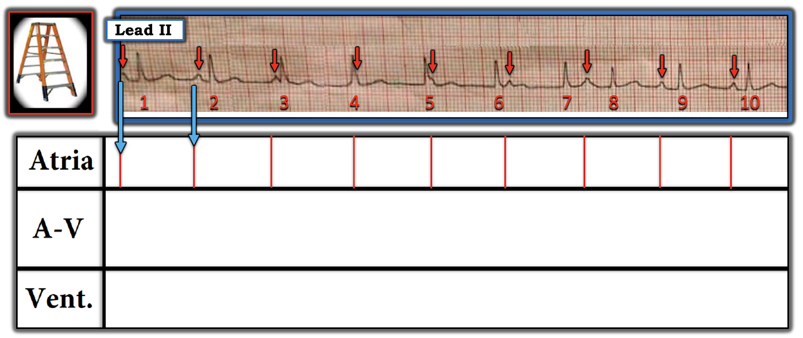
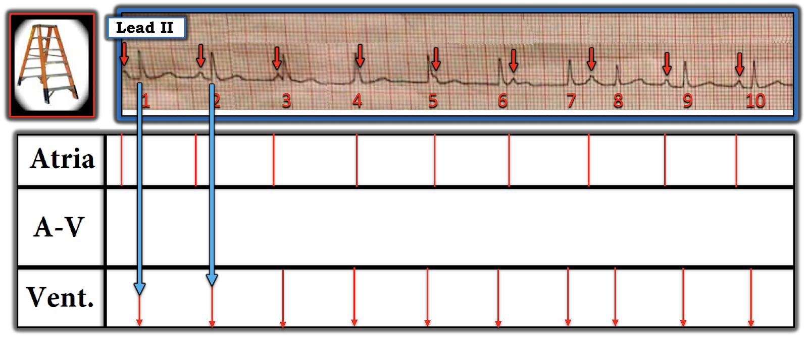
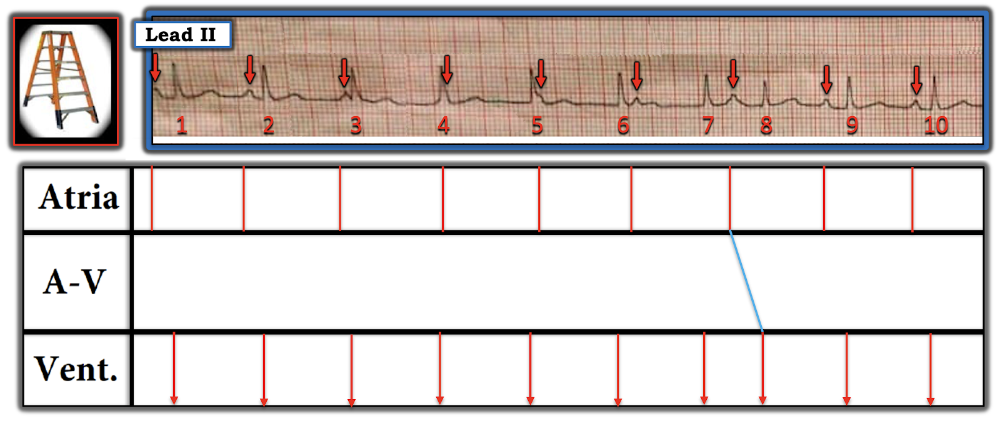
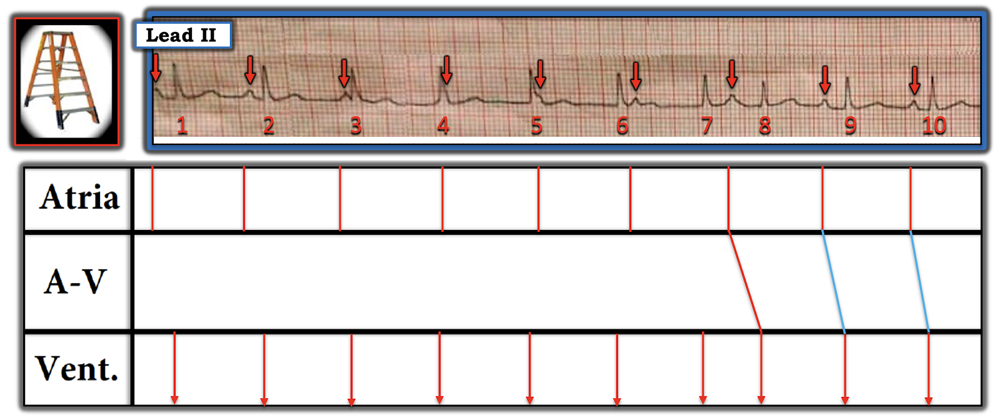
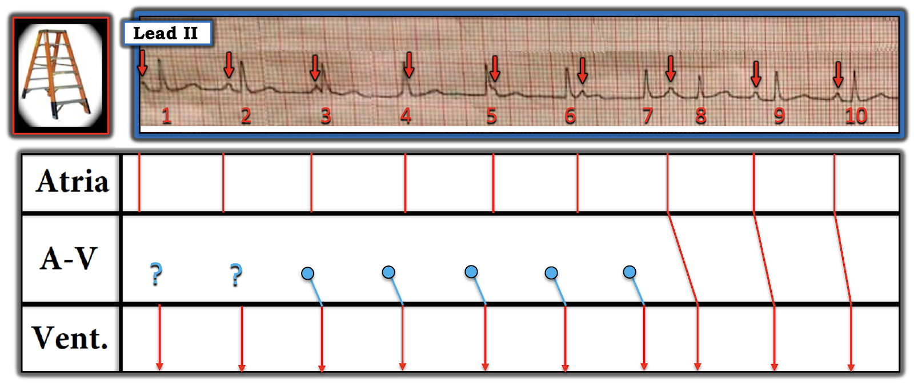
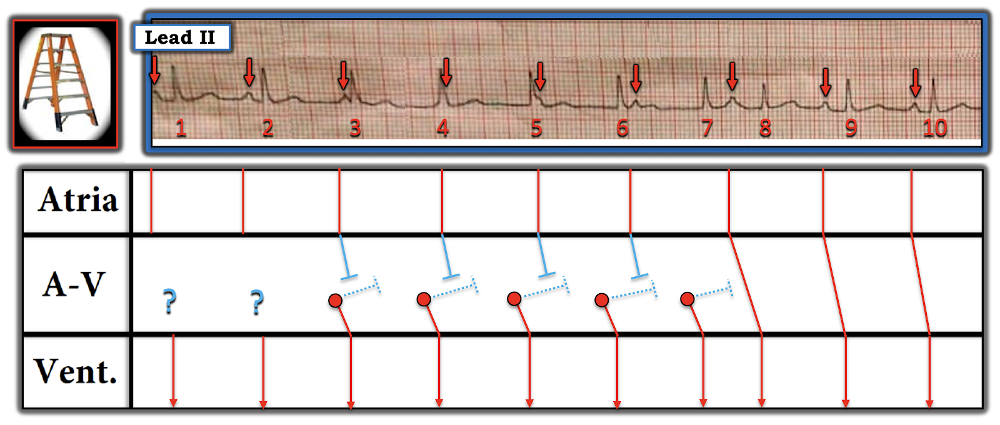
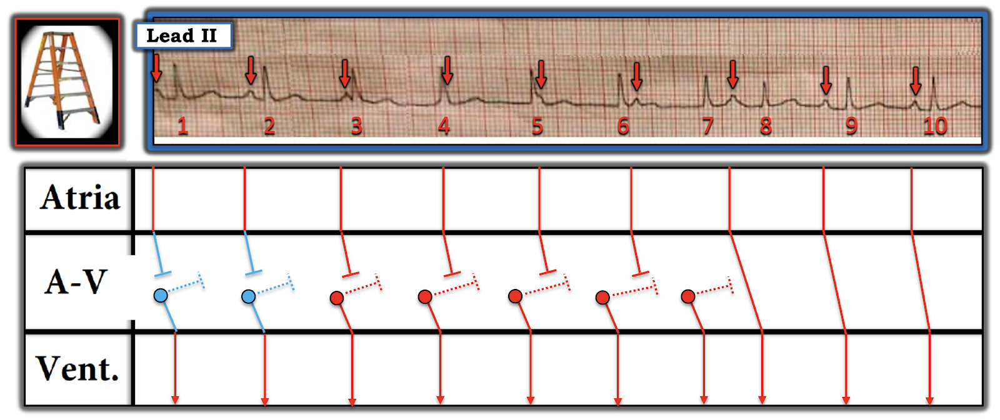

ECG Blog #338 — Ai liên quan với ai?
Dải nhịp (rhythm strip) 2 chuyển đạo trong Hình-1 — được ghi từ một phụ nữ trung niên đến ED (Khoa Cấp cứu — Emergency Department) vì hồi hộp đánh trống ngực (palpitations). Thông tin lâm sàng hạn chế — nhưng siêu âm tim (Echo) không phát hiện bệnh tim cấu trúc nền nào.
CÂU HỎI:
- BẠN sẽ diễn giải nhịp trong Hình-1 như thế nào?
- Có blốc AV không? Nếu có — Đó là loại blốc AV nào?


SUY NGHĨ CỦA TÔI về điện tâm đồ trong Hình-1:
Như thường lệ — tôi ưa đánh giá nhịp theo Cách tiếp cận Ps, Qs 3R, giúp nhớ lại 5 Thông số CHÍNH (Xem ECG Blog 185).
ĐIỂM THEN CHỐT (PEARL) #1: Bạn chọn đánh giá 5 Thông số CHÍNH theo thứ tự nào không quan trọng — vì vậy tôi ưa bắt đầu với bất kỳ thông số nào dễ đánh giá nhất.
- Phức bộ QRS trông hẹp (ít nhất là ở 2 chuyển đạo được cung cấp) — nên tôi cho rằng nhịp này là trên thất.
- Sóng P có hiện diện. Một số sóng P xuất hiện trước phức bộ QRS với khoảng PR có khả năng hợp lý để dẫn truyền. Nhưng các sóng P khác (tức là sóng P xuất hiện ngay trước nhát #3 — và sóng P xuất hiện ngay sau nhát #6) — dường như không có đủ cơ hội để dẫn truyền. Vì vậy, có thể có một dạng phân ly nhĩ thất (AV dissociation) nào đó.
- Phần lớn các phức bộ QRS trông ít nhất là khá đều (Regular) — với tần số (Rate) ~80-85/phút.
- Nhát #8 đến sớm hơn dự kiến!
ĐIỂM THEN CHỐT (PEARL) #2: Tới thời điểm này trong phần diễn giải — tôi nhận thấy bước đơn giản là đánh dấu sóng P giúp ích đáng kinh ngạc để: i) Xác định XEM có nhịp nhĩ nền đều (hoặc gần đều) hay không; và, ii) Thuận lợi cho việc đánh giá xem một số (hoặc tất cả) sóng P đã nhận diện có (hay không) liên quan (Related) với các phức bộ QRS kế cận.
- Trong Hình-1 — tôi bắt đầu “Tìm sóng P” — bằng cách đánh dấu những sóng P mà tôi chắc chắn là có. Tôi đã làm việc này bằng các mũi tên ĐỎ trong Hình-2.
- Như thường gặp khi tôi đánh dấu hoạt động nhĩ — nhịp nhĩ nền hóa ra đều đến bất ngờ (tức là các mũi tên ĐỎ trong Hình-2).
- Tính đến dao động nhẹ của khoảng P-P vốn rất hay gặp — có vẻ hợp lý khi dự đoán rằng một sóng P cuối cùng nhiều khả năng đang ẩn trong QRS của nhát #4 (mũi tên TRẮNG trong Hình-2). Ủng hộ cho giả định này — là "sự rộng thêm" nhẹ-nhưng-có-thật ở phần cuối phức bộ QRS của nhát #4 (điều không thấy ở bất kỳ phức bộ nào trong 9 phức bộ QRS còn lại ở chuyển đạo II).
- ĐIỀU CỐT LÕI: Có vẻ như có một nhịp xoang khá đều trong bản ghi hôm nay! (các MŨI TÊN màu trong Hình-2). Nhận ra dấu hiệu này là điều then chốt cho bước diễn giải tiếp theo của chúng ta!
- T.B. (P.S.): Như tôi vẫn thường nhấn mạnh — các mối liên quan nêu trên gần như không thể nhận ra nếu không dùng compa đo (calipers)! Dùng compa đo — tôi mất không quá vài giây để đến được điểm này trong phần diễn giải!


CÂU HỎI:
- Chẳng phải việc đánh dấu sóng P bằng mũi tên trong Hình-2 — giúp dễ xác định những sóng P nào trong bản ghi hôm nay nhiều khả năng có cơ hội dẫn truyền hay sao?
ĐIỂM THEN CHỐT (PEARL) #3: Khi có một rối loạn nhịp phức tạp, trong đó có nhịp xoang nền kèm một dạng phân ly nhĩ thất nào đó (như trường hợp nhịp hôm nay) — MANH MỐI tôi ưa thích nhất cho thấy một nhát nhiều khả năng được dẫn truyền — là NẾU bạn thấy một nhát đến sớm hơn-dự-kiến.
- Ngoài việc đến sớm-hơn-dự-kiến — bằng chứng ủng hộ rằng nhát #8 trong Hình-2 có lẽ là nhát được dẫn truyền đến từ: i) Thực tế là phức bộ QRS của nhát #8 hẹp, và có hình dạng QRS tương tự (dù không giống hệt) các nhát khác trên bản ghi này; và, ii) Nhát #8 đi sau một sóng P xoang đúng lúc có khoảng PR với khả năng dẫn truyền hợp lý.
- Những điểm NÂNG CAO CHÍNH: Dù sóng P đi trước nhát #8 có khoảng PR dài-hơn-thường-lệ — việc sóng P này xuất hiện quá sát nhát đứng trước (tức là nó xuất hiện trong sóng ST-T của nhát #7) — hoàn toàn có thể giải thích một mức chậm trễ dẫn truyền xuống tâm thất. Việc nhát #8 đến sớm cũng có thể giải thích khác biệt nhẹ về hình dạng QRS (tức là nhiều khả năng do một mức dẫn truyền lệch hướng).
Tổng Hợp Lại Tất cả:
Các suy luận trên gợi ý những điều sau:
- Nhịp trong ca hôm nay là trên thất — vì mọi phức bộ QRS đều hẹp.
- Có một nhịp nhĩ (có lẽ là xoang) nền đều — như gợi ý bởi các mũi tên màu đều đặn trong Hình-2.
- Nhịp thất cũng khá đều, ngoại trừ nhát #8 — rõ ràng đến sớm hơn dự kiến.
- Khi đã có nhịp xoang nền — việc nhát #8 đến sớm đi sau một sóng P đúng lúc gợi ý mạnh rằng nhát #8 là một nhát "bắt được" (capture) được dẫn truyền từ xoang.
- Ngược lại — có một dạng phân ly nhĩ thất (AV dissociation) nào đó ở những chỗ khác trên bản ghi, vì: i) Khoảng PR trước các nhát khác thay đổi; và, ii) Một số sóng P rõ ràng không được dẫn truyền — vì khoảng PR hoặc quá ngắn để dẫn truyền (như sóng P trước nhát #3) — HOẶC — sóng P xuất hiện quá sớm sau QRS nên không thể dẫn truyền (như các sóng P của nhát #4, 5 và 6).
- Khoảng P-P (tức là khoảng cách giữa các mũi tên màu trong Hình-2) — và khoảng R-R của mọi phức bộ QRS trừ nhát #8 đến sớm — gần như bằng nhau!
- KẾT LUẬN: Không có bằng chứng blốc AV trên bản ghi hôm nay. Thay vào đó — thực thể lâm sàng giải thích được tất cả các dấu hiệu trên là phân ly nhĩ thất (AV dissociation) đồng nhịp (isorhythmic)! (Xem ECG Blog #195 — để bàn luận đầy đủ về thực thể này).
ĐIỂM THEN CHỐT (PEARL) #4: Như đã nhấn mạnh trong ECG Blog #192 và ECG Blog #191 — phân ly nhĩ thất không phải là một chẩn đoán. Thay vào đó — Phân ly nhĩ thất (AV Dissociation) là một dấu hiệu điện tâm đồ, là hậu quả của một trong 3 Nguyên nhân. Đó là: i) Blốc AV độ 2 hoặc độ 3 (trong đó một hoặc nhiều sóng P lẽ ra phải dẫn truyền lại không dẫn truyền do một loại blốc AV nào đó); ii) Phân ly nhĩ thất do "Chiếm quyền (Usurpation)" (trong đó một nhịp bộ nối gia tốc chiếm lấy chức năng tạo nhịp); và/hoặc, iii) Phân ly nhĩ thất do "Mặc định (Default)" (trong đó sự chậm lại = "mặc định" của ổ tạo nhịp nút xoang nhĩ (SA) cho phép một ổ tạo nhịp thoát bộ nối xuất hiện).
- Không có bằng chứng rõ ràng về blốc AV độ 2 hoặc độ 3 trên bản ghi hôm nay! — vì tôi không thấy sóng P nào trong Hình-2 có cơ hội dẫn truyền mà lại không dẫn truyền. Điều này không có nghĩa là không thể có một dạng blốc AV nào đó — mà là không có bằng chứng blốc AV trên bản ghi duy nhất mà chúng ta được cung cấp.
- Nguyên nhân phân ly nhĩ thất trong Hình-2 cũng không phải do "mặc định" — vì tần số xoang không giảm xuống dưới 60/phút.
- Bằng phương pháp loại trừ — nguyên nhân phân ly nhĩ thất trong Hình-2 là "Chiếm quyền" loạn nhịp xoang nền bởi một nhịp bộ nối gia tốc, với tần số ~80-85/phút rõ ràng nhanh hơn tần số thoát nút AV thông thường 40-60/phút.
LƯU Ý CỦA TÁC GIẢ:
Tôi hoàn toàn thừa nhận rằng tôi không chắc những sóng P nào trong Hình-2 (ngoài nhát #8 đến sớm) được dẫn truyền xuống tâm thất. Dù vậy — việc không biết điều này không hề làm thay đổi nhận định lâm sàng của tôi:
- Việc có phân ly nhĩ thất do chiếm quyền — với 1 nhát "bắt được" — và ngoài ra tần số xoang và tần số nút AV hơi dao động nhưng gần như bằng nhau — xác lập chẩn đoán phân ly nhĩ thất (AV dissociation) đồng nhịp (như đã mô tả chi tiết trong ECG Blog #195).
- Xử trí lâm sàng bệnh nhân này vẫn như nhau — bất kể nhát #1, 2, 9 và 10 có (hay không) được dẫn truyền xuống tâm thất. Đó là vì nhịp bộ nối gia tốc không quá phổ biến ở người lớn. Do đó — MẤU CHỐT là cố gắng tìm ra nguyên nhân của nhịp này, với hy vọng khắc phục nó (tức là thiếu máu cục bộ/nhồi máu — sốc — rối loạn toan-kiềm hoặc điện giải — tình trạng sau phẫu thuật — ngộ độc digitalis — bệnh nhân "nặng").
=================================
Xác nhận cuối cùng về Nhịp trong ca hôm nay:
Cách TỐT NHẤT để chứng minh cơ chế của một nhịp tim phức tạp — là dựng một Giản đồ bậc thang (laddergram) — mà tôi minh họa trong Hình-4.
- LƯU Ý: Để tìm hiểu thêm về cách đọc (và/hoặc vẽ) Giản đồ bậc thang — Vui lòng xem ECG Blog #188 (có kèm tài liệu hỗ trợ giảng dạy + ĐƯỜNG LINK tới hơn 50 giản đồ bậc thang tôi đã công bố).


Hình-3: Dễ nhất là bắt đầu dựng giản đồ bậc thang bằng cách biểu thị hoạt động nhĩ. Các vạch dọc ĐỎ trong Tầng Nhĩ tương ứng với sóng P (mũi tên ĐỎ) trên dải nhịp dài chuyển đạo II.






LƯU Ý: Nếu nhát #9 và 10 được dẫn truyền — thì tôi sẽ phải giải thích trên giản đồ bậc thang tại sao khoảng PR trước nhát #8 lại dài hơn khoảng PR trước nhát #9 và 10 (điều mà tôi sẽ làm ngay sau đây).


Mặt khác — tôi không chắc NẾU nhát #1 và 2 có (hay không) được dẫn truyền — vì cả hai nhát đều đi sau một khoảng PR có thể hợp lý (do đó có các dấu hỏi XANH).




KẾT LUẬN: Tôi nghĩ nhịp nền trong ca hôm nay là nhịp xoang. Nhịp xoang này bị gián đoạn bởi một nhịp bộ nối gia tốc — kéo dài cho tới khi một sóng P xoang đúng lúc có thể bắt lại tâm thất ( = nhát #8). Như vậy, có phân ly nhĩ thất (AV dissociation) do "chiếm quyền" (từ một ổ tạo nhịp bộ nối gia tốc). Vì tần số của ổ tạo nhịp bộ nối gia tốc và tần số xoang nền rất gần nhau — nên có phân ly nhĩ thất (AV dissociation) đồng nhịp (Xem ECG Blog #195 — để bàn luận đầy đủ về thực thể này).
=================================
LƯU Ý CỦA TÁC GIẢ:
Tôi hoàn toàn thừa nhận rằng tôi không chắc giản đồ bậc thang tôi vẽ trong Hình-9 là đúng (hoặc đó là lời giải khả dĩ duy nhất) cho cơ chế của rối loạn nhịp thú vị hôm nay.
- Không may — vì lý do kỹ thuật (tức là bản ghi hôm nay bị nghiêng và lệch góc — do đó làm méo các số đo một chút, nhưng đủ để không thể chắc chắn về khoảng P-P và R-R thực) — không thể chắc chắn NẾU nhịp nhĩ đã bắt lại được tâm thất ở 2 nhát cuối trên bản ghi.
- Dù vậy — bất kể nhát #1,2; và #9,10 là nhát bắt được từ xoang hay là sự tái lập nhịp bộ nối gia tốc — tôi nghĩ rõ ràng "vấn đề nền" ở đây là phân ly nhĩ thất đồng nhịp (phát sinh từ một nhịp bộ nối gia tốc).
- ĐIỀU CỐT LÕI: "Điều cần nhớ" và cách xử trí lâm sàng của ca hôm nay vẫn như tôi đã đề xuất ở trên = Cố gắng tìm ra nguyên nhân của nhịp bộ nối gia tốc — rồi — Cố gắng "sửa" nguyên nhân đó.
==================================
LỜI CẢM ƠN: Xin cảm ơn Willis Kwandou (từ Watampone, Indonesia) đã chia sẻ ca bệnh và bản ghi này.
==================================
Các bài ECG Blog liên quan đến ca hôm nay:
- ECG Blog #185 — Sử dụng Cách tiếp cận hệ thống để Diễn giải nhịp.
- ECG Blog #188 — Ôn lại cách đọc (và/hoặc vẽ) Giản đồ bậc thang (kèm ĐƯỜNG LINK tới hơn 50 ví dụ lâm sàng về giản đồ bậc thang tôi đã vẽ).
- ECG Blog #186 — và ECG Blog #236 — để ôn lại kiến thức cơ bản về blốc AV độ 2.
- ECG Blog #192 — Ôn lại 3 Nguyên nhân gây Phân ly nhĩ thất — và nhấn mạnh vì sao Phân ly nhĩ thất không giống với Blốc AV hoàn toàn.
- ECG Blog #195 — Ôn lại thực thể Phân ly nhĩ thất (AV Dissociation) Đồng nhịp.
- ECG Blog #191 — Nhấn mạnh sự khác biệt giữa Phân ly nhĩ thất và Blốc AV hoàn toàn.
- ECG Blog #159 — Ôn lại một ca khác để minh họa cách phân biệt giữa Phân ly nhĩ thất và Blốc AV hoàn toàn.
- ECG Blog #202 — và ECG Blog #257 — Ôn lại các ca về CÁCH nhận biết có (hay không) Blốc AV hoàn toàn.
- ECG Blog #247 — Ôn lại một ca phức tạp có Phân ly nhĩ thất.
=================================
PHẦN BỔ SUNG (ngày 24 tháng 9 năm 2022): Tôi đã ôn lại một số tài liệu CHÍNH liên quan đến ca hôm nay:
- Audio Pearl về CÁCH nhận biết một sóng P nhất định trên bản ghi blốc AV có nhiều khả năng được dẫn truyền hay không.

ECG Media PEARL #12 (Audio 6:40 phút) hôm nay — ôn lại thực thể được gọi là phân ly nhĩ thất (AV Dissociation) đồng nhịp.